Tecnologia
10/11/21

Pros y contras de la tecnologíaEl ser humano ha desarrollado tecnología que puedes ver en todos lados en el día a día, desde computadoras hasta coches eléctricos inteligentes, a tal punto que muchos de los procesos se pueden automatizar, pero como hay cosas buenas también tiene cosas malas. La tecnología nos ha hecho no solo dependientes sino también flojos, y es comprensible porque se nos facilitan muchas cosas y las pone más a la mano, por ejemplo ya no es difícil el tener que investigar, antes tenías que buscar en libros, en bibliotecas, hasta apoyarse en gente con el conocimiento, pero ahora tenemos diferentes herramientas como google que automatizan los procesos y te arrojan la información bastante completa prácticamente en cualquier tema, así como también los tutoriales en youtube y otras muchas herramientascon sólo tener internet.
Sí, la tecnología nos ayuda es estar conectados y a ser una sociedad avanzada con ingreso a información inimaginable, sin embargo, hemos perdido antiguos hábitos que nos ayudaban a ser más inteligente o ágiles como la lectura, el dibujo o pasar un día fuera de convivencia, la concentración se pierde, hay falta de control del uso de la tecnología, sentimos la necesidad de estar conectados constantemente al celular, hay comunicación rápida. Un análisis llevado a cabo en España por el Instituto Nacional de Estadística (INE), reveló que el 96% de los domicilios cuenta con un teléfono móvil, el 74% tiene acceso al internet y un 93% lo usa diario, por consiguiente, es fundamental tener un óptimo uso de la tecnología, debido a que nuestra capacidad de contestación, diálogo, concentración y humor, las cuales nos realizan seres sociales por naturaleza, permanecen siendo eliminadas por el mal uso de la tecnología.

 Top 10 mejores
inventos tecnológicos
Top 10 mejores
inventos tecnológicos